Data Science for Electron Microscopy
Week 5: From images to features: descriptors & tree ensembles
FAU Erlangen-Nürnberg
Institute of Micro- and Nanostructure Research


Recap: where we left off
- Week 4: regression → loss landscapes and gradient descent → Ridge/Lasso → honest validation.
- You can fit a model by minimising an empirical risk \(\hat{R}(\mathbf{w})\), read its coefficients (E1/E2 explainability), and — most importantly — report an honest score with
GroupKFoldso that crops of one specimen never sit in train and test. - The leakage taxonomy (duplicate, temporal, group/specimen, preprocessing) is now your checklist for every evaluation in this course.
- Gap: every model so far took a ready-made feature matrix \(\mathbf{X}\in\mathbb{R}^{N\times D}\). But an EM experiment delivers images, not tables. Who builds \(\mathbf{X}\)?
- Today: we build \(\mathbf{X}\) ourselves — from particles, grains and atom columns — and learn the model family that dominates tabular data: tree ensembles.
Today’s questions
- How do we turn a micrograph into a table of physically meaningful numbers? Segmentation → particle descriptors; atom-column finding → local-environment descriptors.
- Which properties must a good descriptor have? Invariance to translation, rotation, neighbour order — and to image-level nuisances like probe current.
- Why do tree ensembles win on most tabular problems — and when do they not?
- What does the model actually use? Permutation importance and SHAP — and why correlated descriptors fool both.
- Road map: images → features (6) · atom-column finding (4) · local-environment descriptors (8) · decision trees (6) · random forests & boosting (7) · baseline ladder & honest validation (4) · explaining tree models (8) · wrap-up (4).
- Self-study:
notebooks/week05_features_trees.ipynb— simulate HAADF images with vacancies and substitutions, find columns, compute descriptors, classify defects with RF/GBM underGroupKFold, and audit the model with permutation importance.
Learning outcomes
By the end of this week you can:
- Describe a classical segmentation pipeline (smoothing → Otsu threshold → watershed →
regionprops) and name its failure modes. - Implement atom-column finding in HAADF-STEM: peak finding plus 2-D Gaussian refinement to sub-pixel precision.
- Design local-environment descriptors (neighbour distances, angles, relative intensity, radial symmetry functions) and check their invariances.
- Explain how a decision tree chooses splits, why a single tree has high variance, and how bagging, random forests and gradient boosting fix it.
- Climb the baseline ladder (majority → linear → RF/GBM → NN) with grouped cross-validation and justify the final model choice.
- Compute and critique impurity, permutation and SHAP importances, including the correlated-feature pitfall.
From pixels to a feature table
- A micrograph is a grid of \(10^5\)–\(10^7\) correlated pixels. Classical ML needs rows = objects, columns = descriptors.
- Object = what the scientific question is about: a particle, a grain, a precipitate, a pore, an atom column.
- Descriptor = a number per object that encodes what we believe matters: size, shape, intensity, neighbourhood.
- The resulting \(\mathbf{X}\in\mathbb{R}^{N\times D}\) is small, interpretable and cheap to model.
- Two routes in this course:
- Designed features (today): physics chooses \(\boldsymbol\phi(\text{image})\), the model is simple.
- Learned features (Weeks 6–10): the network learns \(\boldsymbol\phi\) from data.
- Designed features are lossy by construction — they keep only what you thought to keep Sandfeld, Stefan et al., (2024).
- But with \(N\) = a few dozen images they are usually the stronger baseline.
Classical segmentation → particle descriptors
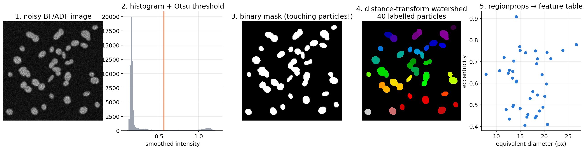
Synthetic particle image processed with scikit-image Walt, Stéfan van der et al., (2014), doi:10.7717/peerj.453: smoothing, Otsu threshold Otsu, Nobuyuki, (1979), doi:10.1109/TSMC.1979.4310076, binary mask, distance-transform watershed to split touching particles, and a regionprops feature table (one row per particle).
regionprops: what a particle table contains
Size & shape
area,equivalent_diameter_area\(=\sqrt{4A/\pi}\)perimeter, circularity \(4\pi A/P^2\)eccentricity(of the fitted ellipse),major/minor_axis_lengthsolidity= area / convex-hull area (concavity, merged particles)orientation(angle of the major axis)
Intensity & context
mean_intensity,max_intensity(needs the intensity image)- centroid → nearest-neighbour distance, local number density
- per-image statistics: size distribution, area fraction, \(D_{50}\)
- units: convert px → nm with the calibrated pixel size before modelling
A
regionpropstable is a designed representation: every column encodes a hypothesis about what matters.
Segmentation descriptors: four pitfalls
- Edge truncation: particles touching the image border are cut → biased small. Exclude them (
clear_border) or correct statistically. - Calibration & resolution: pixel size varies with magnification; features below ~3 px diameter are dominated by the PSF and noise.
- Error propagation: a split or merge error changes several descriptors at once (area, eccentricity, solidity) — segmentation errors become correlated label noise.
- 2-D ≠ 3-D: projections overlap, sections cut particles off-centre; distributions need stereological correction.
- Validation unit: particles from the same image share imaging conditions → group by image (or specimen) when you cross-validate.
HAADF-STEM: atom columns as objects
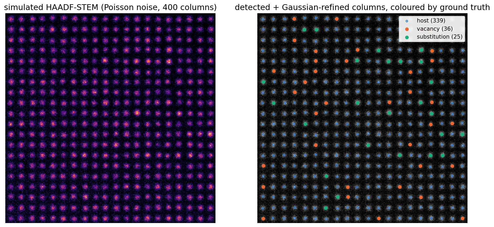
Simulated HAADF-STEM image (square lattice, spacing 12 px, Poisson noise) with vacancy-containing columns (dimmer) and heavier substitutional columns (brighter). Right: detected and refined columns coloured by ground truth.
Atom-column finding: peaks first
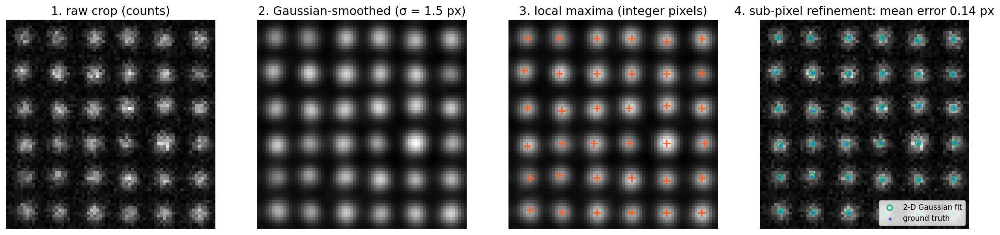
Column finding on a crop: raw counts → Gaussian smoothing (matched filter) → local maxima with a minimum separation → 2-D Gaussian refinement to sub-pixel positions (mean error ≈ 0.13–0.14 px against ground truth).
2-D Gaussian refinement
For each peak, fit in a small window (\(9\times9\) px):
\[ I(\mathbf{r}) = A\,\exp\!\left(-\frac{|\mathbf{r}-\mathbf{r}_0|^2}{2\sigma^2}\right) + b \]
by least squares \(\min_{A,\mathbf{r}_0,\sigma,b}\sum_{\text{pixels}}\big(I_\text{obs}-I(\mathbf{r})\big)^2\).
- Outputs per column: position \(\mathbf{r}_0\), amplitude \(A\), width \(\sigma\), local background \(b\) → the first four descriptors.
- Integrated intensity \(\sum(I_\text{obs}-b)\) is more robust to probe blur than \(A\).
- This is the workflow of Atomap Nord, Magnus et al., (2017), doi:10.1186/s40679-017-0042-5.
- Loss ↔︎ noise model (Week 2): least squares = Gaussian noise. At < 10 counts per pixel a Poisson likelihood is the principled loss.
- Overlap: when columns are closer than ~\(3\sigma\), fit neighbouring Gaussians jointly.
- Scan distortion & drift shift rows systematically — correct before measuring strain.
- Deep-learning finders (fully convolutional networks) replace steps 1–3 when contrast is complex Ziatdinov, Maxim et al., (2017), doi:10.1021/acsnano.7b07504 → Week 7.
Column finding: failure modes to check
- Missed columns (below threshold) → vacancies-rich regions under-sampled; check detection recall on a simulated image with known truth.
- Double detections (
min_distancetoo small) → fake neighbours at \(r \ll a\); check the nearest-neighbour distance histogram. - Edge columns: incomplete neighbour shells → descriptors differ systematically; drop columns within one lattice spacing of the border (as in the notebook).
- Mismatch to ground truth: in simulations, match detected ↔︎ true positions with a KD-tree and a tolerance (\(< a/3\)) before assigning labels.
- Rule: validate the finder on simulated images with known truth before trusting any downstream statistics.
The local environment of a column
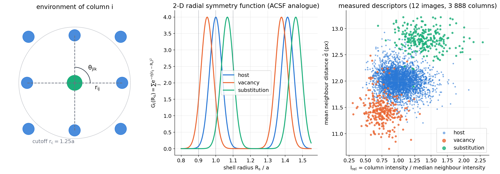
Left: the environment of column \(i\) — neighbours \(j\) within a cutoff, bond lengths \(r_{ij}\) and angles \(\theta_{jik}\). Middle: 2-D radial symmetry function \(G_i(R_s)\) for host, vacancy-neighbourhood and substitution-neighbourhood geometries. Right: two measured descriptors already separate the three classes.
Invariance discipline
A local descriptor \(\boldsymbol\phi(\text{environment of } i)\) should be:
- Translation invariant: use \(\mathbf{r}_j-\mathbf{r}_i\), never \(\mathbf{r}_i\).
- Rotation invariant: distances, angles, \(|\)Fourier modes\(|\) — not raw \(\Delta x,\Delta y\).
- Permutation invariant: sums, means, histograms, sorted lists over neighbours — never “neighbour #1, #2, …”.
- Continuous: a 0.1 px displacement → a small change of \(\boldsymbol\phi\) (smooth cutoffs, Gaussian bins).
- Chemically / contrast sensitive: a heavier column must change \(\boldsymbol\phi\).
- EM-specific: invariant to image-level nuisances — probe current, detector gain, background → use ratios like \(I_\text{rel}=I_i/\text{median}_j I_j\).
If a descriptor violates an invariance, the model learns coordinate-system or session accidents instead of physics.
Simple, interpretable environment descriptors
| descriptor | definition | encodes |
|---|---|---|
| coordination \(n_i\) | \(\#\{j: r_{ij} < r_c\}\) | missing / extra neighbours |
| mean bond length \(\bar d_i\) | \(\frac{1}{n_i}\sum_j r_{ij}\) | local strain (relaxation) |
| bond-length spread \(s_i\) | std of \(r_{ij}\) | distortion, asymmetry |
| angular spread | std of angular gaps between neighbours | shear, disorder (0 for a perfect square) |
| relative intensity \(I_{\text{rel},i}\) | \(I_i / \mathrm{median}_j I_j\) | \(Z\)-contrast, occupancy |
| neighbour contrast | \(\mathrm{median}_j I_{\text{rel},j}\) | “a bright neighbour nearby” |
ACSF: atom-centred symmetry functions
Radial Behler, Jörg et al., (2007), doi:10.1103/PhysRevLett.98.146401
\[ G_i^{\text{rad}}(R_s) = \sum_{j} e^{-\eta\,(r_{ij}-R_s)^2}\, f_c(r_{ij}) \]
- a soft histogram of neighbour distances around shell \(R_s\)
- many \((\eta, R_s)\) pairs → a feature vector
- \(f_c\): smooth cutoff → continuity
Angular
\[ G_i^{\text{ang}} = 2^{1-\zeta}\sum_{j,k}(1+\lambda\cos\theta_{jik})^{\zeta}\, e^{-\eta'(r_{ij}^2+r_{ik}^2)}\,f_cf_c \]
- scores bond angles smoothly
- invariant by construction: only distances and angles
- 2-D use: identical formulas with in-plane \(r_{ij}\), \(\theta_{jik}\)
SOAP and its 2-D analogue
SOAP Bartók, Albert P. et al., (2013), doi:10.1103/PhysRevB.87.184115
- Smooth the neighbours into a density \(\rho_i(\mathbf{r})=\sum_j e^{-|\mathbf{r}-\mathbf{r}_{ij}|^2/2\sigma^2}\).
- Expand in radial × spherical-harmonic basis: \(c_{nlm}\).
- Rotation-invariant power spectrum \(p_{nn'l}=\sum_m c_{nlm}c^*_{n'lm}\).
- Compare environments with a kernel.
2-D version for projected columns
- Same smoothed density in the image plane.
- Expand the angular part in circular harmonics \(e^{im\varphi}\): \(c_{nm}\).
- In-plane rotation only changes the phase of \(c_{nm}\) → \(|c_{nm}|^2\) is invariant.
- \(m=4\) / \(m=6\) modes = bond-orientational order \(\psi_4\), \(\psi_6\) (square vs hexagonal).
Choosing descriptors: a practical ladder
- Start with physics you can name: relative intensity (occupancy / \(Z\)), mean bond length (strain), coordination (missing neighbours).
- Add smooth, invariant fingerprints (radial/angular symmetry functions, \(|c_{nm}|^2\)) when simple features plateau.
- Tune the cutoff and widths (\(r_c\), \(\eta\), \(\sigma\)) as hyperparameters — inside the cross-validation loop.
- Check invariances (rotate/flip the image, rescale the intensity) and nuisance leakage (can the features identify the image?).
- Move to learned representations (CNN, GNN) only when designed descriptors saturate and you have enough labelled data.
The feature table we will model
Dataset (notebook): 12 simulated HAADF images, 3 888 inner columns
- host 3 337 · vacancy 286 · substitution 265 (strong class imbalance)
- 14 descriptors per column:
- raw:
amp,I_int,sigma,bg_local,x_pos - local:
I_rel,amp_rel,n_nb,d_mean,d_std,ang_std,G_0.9a,G_1.0a,G_1.1a
- raw:
- groups = image id (for
GroupKFold)
- Metric: balanced accuracy = mean per-class recall. “Always host” scores 86 % accuracy but only 0.33 balanced accuracy.
- Nuisance:
x_posis physically meaningless — a built-in test for importance methods. - Leakage trap:
bg_localdiffers per image and correlates with the image’s defect fraction. - Heterogeneous units, a few hundred minority examples, thresholds in the physics → classic tabular regime.
A decision tree = a sequence of yes/no questions
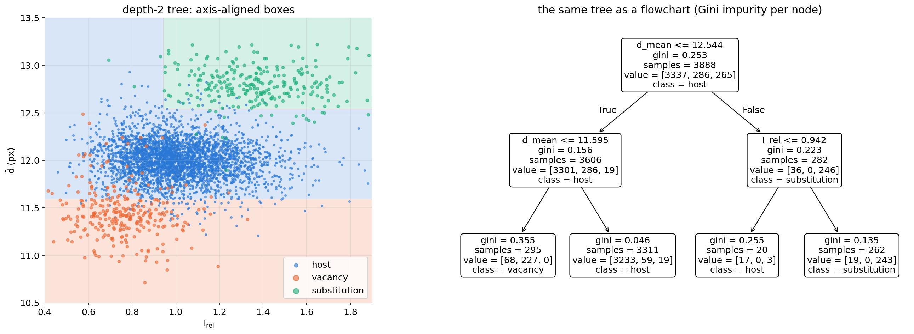
A depth-2 tree on two descriptors: the root asks about the mean neighbour distance, the second level about the relative intensity. Left: the induced axis-aligned partition of feature space; right: the same tree as a flowchart.
How splits are chosen
At each node choose the (feature \(j\), threshold \(t\)) that maximises the impurity decrease
\[ \Delta = I(\text{parent}) - \frac{N_L}{N}\, I(\text{left}) - \frac{N_R}{N}\, I(\text{right}). \]
- Classification: Gini \(I=\sum_c p_c(1-p_c)\) or entropy \(I=-\sum_c p_c\log p_c\).
- Regression: \(I\) = within-node variance → a regression tree is piecewise least squares.
- Greedy and recursive: best split now, no look-ahead, no gradient descent.
- Cost \(\approx O(N D \log N)\) → fast on large tables; no feature scaling needed (only the order of values matters).
Impurity measures
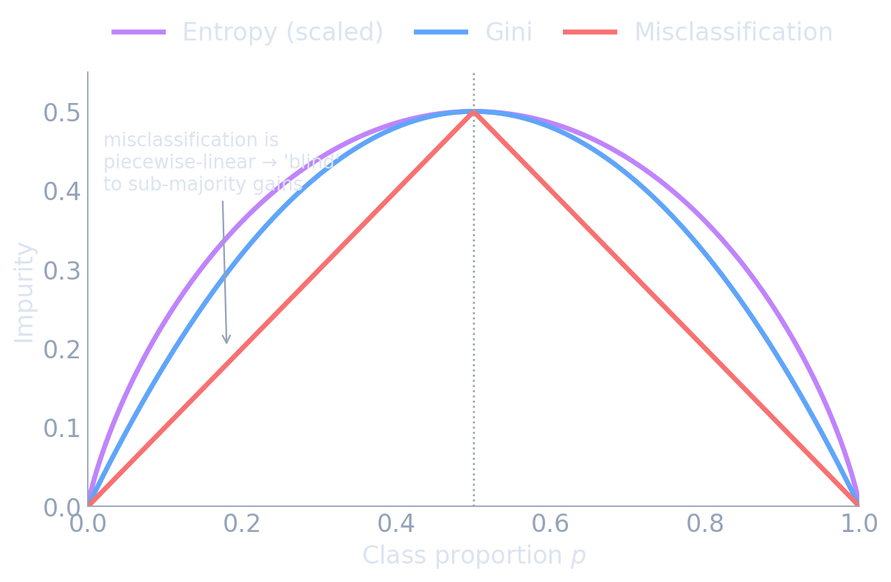
Gini, entropy and misclassification error for a two-class node as a function of \(p\). All vanish at pure nodes; only Gini and entropy are strictly concave, so they reward splits that purify a child even without changing its majority class. (Figure from the MFML course, unit 8.)
- Gini ≈ entropy in practice; Gini is the scikit-learn default (no logarithm).
- Misclassification error is not used for growing: it ignores improvements that do not flip the majority.
Growing, pruning — and instability
- Grown to pure leaves, a tree memorises the training set: low bias, high variance.
- Pre-pruning:
max_depth,min_samples_leaf. - Cost-complexity pruning: minimise \(R_\alpha(T)=R(T)+\alpha|T|\) — regularised ERM with the number of leaves as penalty, \(\alpha\) by CV.
- A small change of the data can flip the root split and reshape the whole tree.
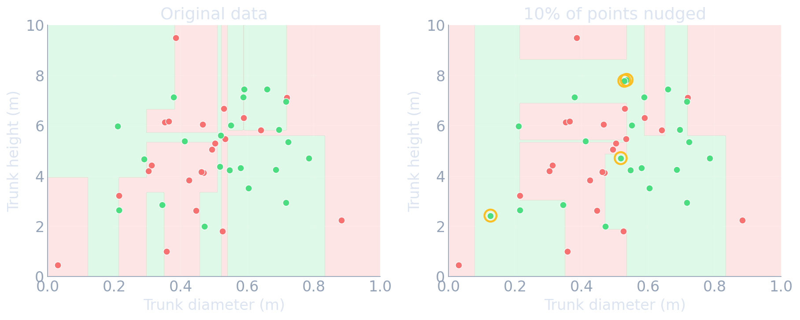
Strengths and limits of a single tree
Strengths
- readable rules (for depth ≤ 3–4)
- handles mixed units, no scaling, monotone-invariant
- captures thresholds and interactions naturally
- fast to train and predict
Limits
- high variance, unstable structure
- piecewise constant → staircase approximations of smooth or oblique boundaries
- cannot extrapolate beyond the training range
- greedy → not globally optimal
Bagging: variance reduction by averaging
- Bootstrap: draw \(N\) samples with replacement → a new training set (≈63 % unique points) Breiman, Leo, (1996).
- Train one deep tree per bootstrap sample, average the predictions (or vote).
- For \(B\) predictors with variance \(\sigma^2\) and pairwise correlation \(\rho\): \[ \operatorname{Var}\Big[\tfrac{1}{B}\textstyle\sum_b \hat f_b\Big] = \rho\,\sigma^2 + \frac{1-\rho}{B}\,\sigma^2 . \]
- More trees kill the second term; the correlation ceiling \(\rho\sigma^2\) remains → we must decorrelate the trees.
Random forest = bagging + random feature subsets
- At every split, consider only a random subset of \(m\approx\sqrt{D}\) features Breiman, Leo, (2001).
- Strong features cannot dominate every tree → lower \(\rho\).
- Defaults that just work: 200–500 trees, fully grown,
max_features="sqrt". class_weight="balanced_subsample"for imbalanced defect classes.- Extra-trees: also randomise the thresholds — even lower \(\rho\).
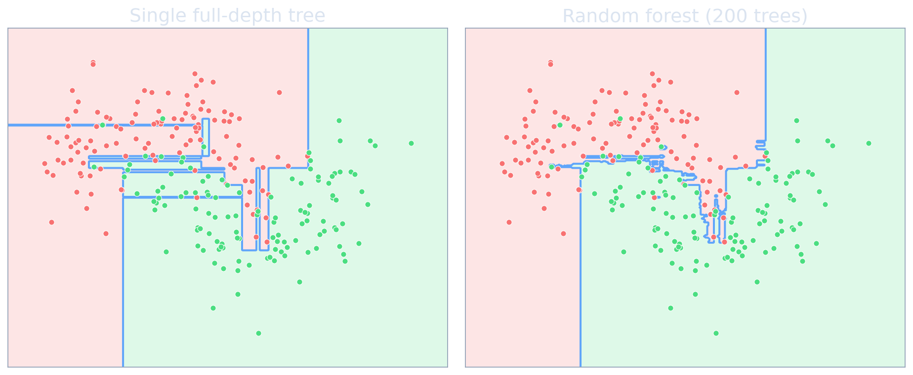
Gradient boosting: gradient descent in function space
- Treat the predictor \(\hat f\) itself as the variable. Minimise \(\sum_i \mathcal{L}(y_i,\hat f(\mathbf{x}_i))\) Friedman, Jerome H., (2001).
- At step \(t\) compute the pseudo-residuals \(r_i^{(t)} = -\partial\mathcal{L}(y_i,\hat f)/\partial \hat f(\mathbf{x}_i)\).
- Fit a small regression tree \(h_t\) to the \(r_i^{(t)}\).
- Update \(\hat f^{(t)}=\hat f^{(t-1)}+\eta\, h_t\) — the same \(\eta\) as in Week 4.
- Squared error → pseudo-residual = ordinary residual: “each tree fixes what the ensemble still gets wrong”. Log-loss → classification.
Boosting builds the function tree by tree
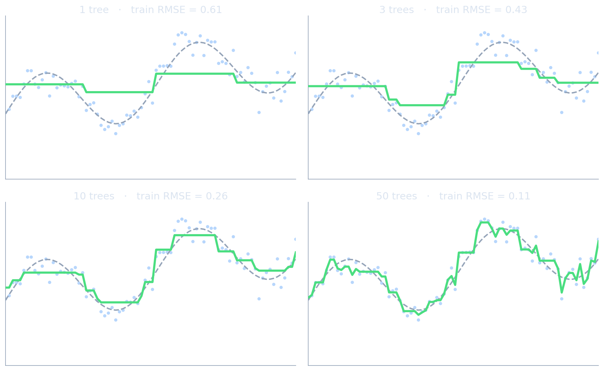
Fitting \(y=\sin 2x+0.3x+\varepsilon\) with gradient boosting: after 1, 3, 10 and 50 shrunken trees the ensemble approaches the target and eventually starts to follow the noise — the reason for early stopping (MFML course, unit 8).
Gradient boosting in practice
Regularisation knobs
- learning rate \(\eta\) = 0.03–0.1 + early stopping
- shallow trees (depth 3–8 /
max_leaf_nodes) - subsampling rows / columns (stochastic GB)
- L2 penalty on leaf values, min samples per leaf
Implementations
HistGradientBoostingClassifier(scikit-learn): histogram binning, native missing values, fast- XGBoost Chen, Tianqi et al., (2016) — regularised objective, the Kaggle workhorse
- LightGBM, CatBoost Prokhorenkova, Liudmila et al., (2018) — speed / categorical features
Tuning recipe: fix \(\eta=0.05\), early-stop the number of trees on grouped validation folds, then tune depth and
min_samples_leaf.
Why trees win on (most) tabular data
- Uninformative features are ignored by split selection; MLPs must learn to suppress them.
- Non-smooth targets: thresholds and jumps are natural for piecewise-constant trees.
- Meaningful axes: each column is a physical quantity; trees exploit axis-aligned structure, rotation-invariant MLPs waste capacity.
- Confirmed on 45 benchmark datasets Grinsztajn, Léo et al., (2022); foundation models such as TabPFN are closing the gap on small tables Hollmann, Noah et al., (2023).
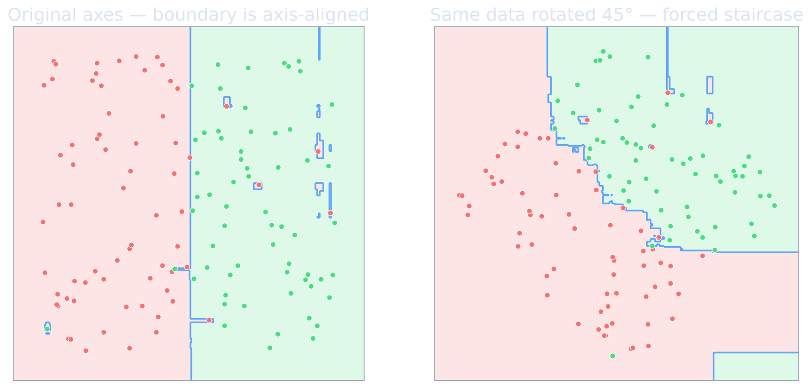
The baseline ladder
- Trivial baseline: predict the mean (regression) or the majority class. Anything below this is broken.
- Linear model: Ridge / logistic regression on standardised features. Interpretable, hard to overfit.
- Tree ensemble: random forest, then gradient boosting.
- Neural network: MLP on the same features (Week 6) — or a CNN on the raw image (Week 7).
Rules: same grouped CV folds for every rung · keep the simplest model that is not significantly worse · report all rungs in the paper / miniproject.
The ladder on the defect classifier
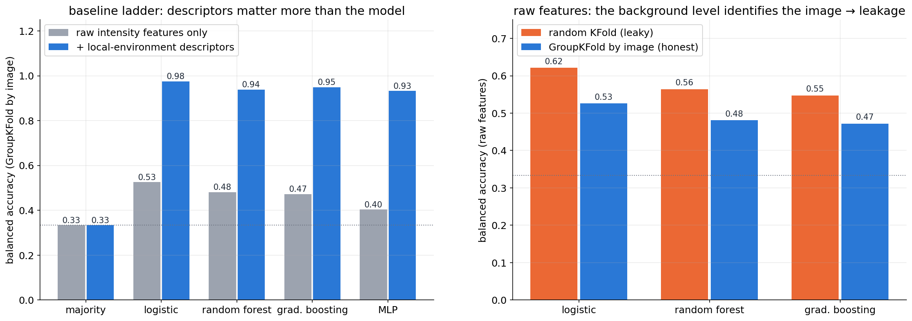
Balanced accuracy under GroupKFold by image (4 folds, 12 images). Left: grey = raw intensity features only; blue = with local-environment descriptors. Right: raw features only, random KFold vs GroupKFold — the random split is optimistic.
Honest validation for object-level EM data
- Group = the unit that shares nuisances: image (probe, dose, drift), session, specimen. When in doubt, choose the coarser group.
- All preprocessing inside the folds: scaler, feature selection, cutoff \(r_c\) and \(\eta\) tuning, class-weight choices.
- Imbalance: stratify within groups if possible (
StratifiedGroupKFold), report balanced accuracy and per-class recall / confusion matrix. - Early stopping for boosting on an inner grouped split — not on the outer test fold.
- Nuisance audit: can a classifier predict the image id from your features? If yes, expect leakage under random splits.
Explainability for tree models: where we are
- Week 4 (E1–E2): a linear model is its explanation — standardised coefficients, signs, magnitudes.
- Shallow tree: readable rules (E1) — but unstable (a different sample → different rules).
- Forest / boosting: hundreds of trees → need post-hoc explanations:
- global: which features does the model rely on overall? → impurity (MDI), permutation importance
- local: why this prediction for this column? → SHAP
- Always: explanations describe the model, not nature. Importance ≠ causation.
Impurity (MDI) importance
\[ \text{MDI}_j = \frac{1}{B}\sum_{b=1}^{B}\ \sum_{\text{nodes splitting on } j} \frac{N_\text{node}}{N}\,\Delta_\text{node}, \qquad \text{normalised to } \textstyle\sum_j \text{MDI}_j = 1 . \]
rf.feature_importances_— free, computed during training.- Computed on the training data → cannot distinguish “useful” from “useful for memorising”.
- Cardinality bias: continuous, high-resolution features offer more thresholds → more chance splits → inflated scores, even for pure noise Strobl, Carolin et al., (2007), doi:10.1186/1471-2105-8-25.
- Correlated features share splits arbitrarily → MDI spreads or concentrates credit unpredictably.
Permutation importance
- Score the fitted model on held-out data (here: held-out images) → baseline.
- Shuffle column \(j\) across rows — its distribution stays, its link to \(y\) is destroyed.
- Re-score the same model.
- Importance\(_j\) = baseline − shuffled score; repeat and average.
- Model-agnostic: needs only
predictand a score → works for RF, GBM, MLP, CNN features. - Held-out → not fooled by memorisation.
- Question it answers: how much does this model rely on feature \(j\) for this data?
sklearn.inspection.permutation_importance(model, X_te, y_te, scoring="balanced_accuracy", n_repeats=10)
MDI vs permutation importance on the defect forest
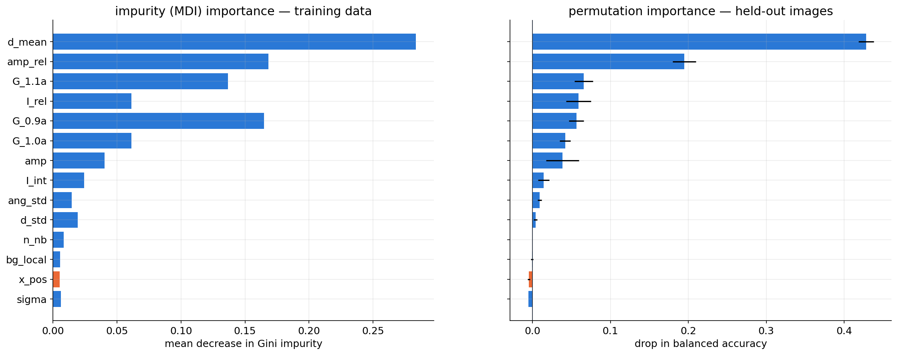
Random forest trained on 9 images, importances for the 3 held-out images. Left: MDI (training data) gives every feature — including the meaningless column position x_pos (orange) and the width sigma — non-zero credit and ranks the geometric fingerprints G_0.9a/G_1.1a high. Right: permutation importance on held-out images puts x_pos and sigma at ≈ 0 and ranks d_mean and amp_rel first.
The correlated-feature pitfall
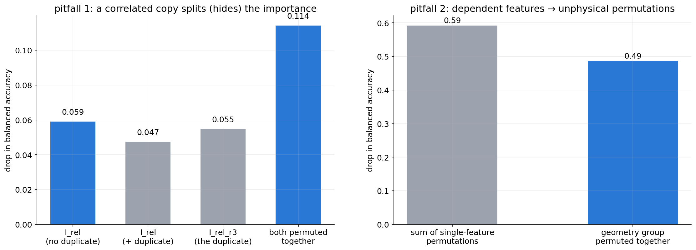
Left: adding a near-duplicate of I_rel (same quantity, slightly different integration window) splits its importance between the two copies; permuting both together reveals the true joint importance (≈ 2× either copy). Right: permuting d_mean alone creates columns whose bond length contradicts their own \(G(R_s)\) values — the sum of single-feature importances exceeds the importance of the geometry group permuted together.
SHAP: additive attribution for one prediction
- Decompose one prediction Lundberg, Scott M. et al., (2017): \[ f(\mathbf{x}) = \phi_0 + \sum_{j=1}^{D}\phi_j, \qquad \phi_0 = \mathbb{E}[f(\mathbf{X})] . \]
- \(\phi_j\) = Shapley value: the average marginal contribution of feature \(j\) over all coalitions \(S\) of other features: \[ \phi_j = \sum_{S\subseteq D\setminus\{j\}} \frac{|S|!\,(D-|S|-1)!}{D!}\,\big[v(S\cup\{j\})-v(S)\big]. \]
- Completeness: attributions sum exactly to prediction − baseline. Signed: pushes up or down.
- TreeSHAP computes exact values for tree ensembles in polynomial time Lundberg, Scott M. et al., (2020).
SHAP on the defect classifier
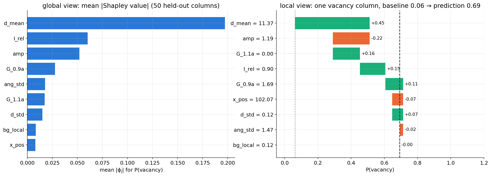
Exact (brute-force, \(2^9\) coalitions) interventional Shapley values for \(P(\text{vacancy})\) of a gradient-boosting model with 9 descriptors, computed without the shap package. Left: mean \(|\phi_j|\) over 50 held-out columns. Right: one vacancy column — baseline 0.06, prediction 0.69; attributions sum exactly to the difference.
SHAP: honest limitations
- Correlated features: interventional SHAP also builds off-manifold inputs (it mixes \(\mathbf{x}_S\) with background values of \(\mathbf{x}_{\bar S}\)); credit between correlated copies is split, sometimes unstably.
- Baseline dependence: \(\phi_0\) and all \(\phi_j\) depend on the background sample — explain relative to a meaningful reference (e.g. host columns).
- Describes the model, not the physics: a shortcut feature gets a large, “fair” attribution.
- Cost: exact Shapley is exponential in \(D\); KernelSHAP approximates, TreeSHAP is exact only for trees.
- Good practice: combine permutation importance on held-out groups + grouped features + SHAP for local debugging + domain knowledge.
Checklist: explaining a tabular EM model
- Ladder first: is the model better than majority and linear under grouped CV? If not, there is little to explain.
- Held-out permutation importance with the same grouped folds; report mean ± std over repeats.
- Cluster correlated descriptors (e.g. |Spearman ρ| > 0.8) and permute clusters together.
- Check nuisance features: position, image id, background, acquisition time must have ≈ 0 importance.
- SHAP for individual failure cases (misclassified columns): which descriptor misled the model?
- Confirm by intervention: retrain without a feature group; simulate data where the mechanism is known.
Self-study this week
- Notebook:
notebooks/week05_features_trees.ipynb—
- simulate 12 HAADF images with vacancies and substitutions (per-image probe current, background, dose)
- find columns: peak finding + 2-D Gaussian refinement (≈ 0.13 px error)
- compute 14 descriptors, build the baseline ladder with
GroupKFoldby image - random vs grouped split on raw features (leakage gap ≈ 0.08–0.10)
- MDI vs permutation importance; the near-duplicate pitfall
- Exercises: grouped permutation importance; design a neighbour-contrast descriptor
- optional: SHAP (only if
shapis installed)
- Runtime: a few minutes on a laptop CPU; no GPU needed.
Summary
- Images → tables: segment objects (particles, columns), then describe them; every step’s hyperparameters shape the table.
- Atom-column finding: smooth → local maxima → 2-D Gaussian fit gives sub-pixel positions, amplitudes and widths.
- Descriptors must be invariant to translation, rotation, neighbour order — and to image-level nuisances (use ratios such as \(I_\text{rel}\)).
- Trees partition feature space greedily; random forests reduce variance by averaging decorrelated trees; gradient boosting reduces bias by functional gradient descent.
- Baseline ladder with grouped CV: in our defect task descriptors moved balanced accuracy from ≈ 0.5 to > 0.9; the model choice moved it by a few points.
- Explanations: prefer held-out permutation importance over MDI; permute correlated groups together; SHAP explains single predictions of the model, not physics.
Must-know takeaways
- A regionprops / column table is a designed representation; segmentation and detection errors propagate into correlated descriptor errors.
- Gaussian refinement of atom columns = least-squares fit (Gaussian noise); sub-pixel precision is limited by counts, not pixel size.
- Local descriptors must be translation, rotation and permutation invariant; ACSF/SOAP achieve this by summing over neighbours and using distances, angles or power spectra.
- Trees split greedily by impurity decrease; they are scale-free, capture thresholds and interactions, but have high variance and cannot extrapolate.
- Bagging variance \(=\rho\sigma^2+\frac{1-\rho}{B}\sigma^2\): random forests lower \(\rho\) with feature subsampling; gradient boosting fits trees to pseudo-residuals with learning rate \(\eta\).
- MDI is training-set based and biased; permutation importance on held-out groups is honest but masked by correlated features; SHAP satisfies completeness but explains the model, not causation.
Next week: neural networks & backpropagation
- Today we designed \(\boldsymbol\phi(\mathbf{x})\) from physics and used simple models on top.
- Week 6: make the feature map learnable — perceptron → MLP, activation functions, softmax & cross-entropy.
- Autograd & backpropagation: the chain rule on a computational graph, a worked 2-layer example.
- Training diagnostics: initialisation, normalisation, loss curves, overfit-one-batch check.
- The baseline ladder continues: the MLP must beat today’s logistic regression / GBM on the same grouped folds — in the notebook it did not (0.93 vs 0.975).
Continue
References

©Philipp Pelz - FAU Erlangen-Nürnberg - Data Science for Electron Microscopy